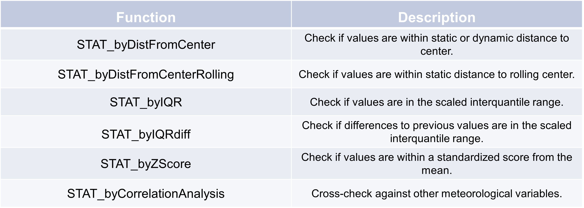

Statistical error detection
Interquartile range
The Interquartile range (IQR) is a measure of statistical dispersion, which represents the spread
of the middle 50% of a dataset. It is a way to describe the range within which the central half of your data lies,
and it helps to understand the variability in the data without being affected by extreme values or outliers.
The lower quartile corresponds with the 25th percentile and the upper quartile corresponds with the 75th percentile.
Here’s an example of how to use the STAT_byIQR function:
>>> d = {'col1': [1, 9, 3, 6, 20, 8, 3, 1, 30, 5]}
>>> df = pd.DataFrame(data=d)
>>> test = TSCC.detection.STAT_byIQR(series=df['col1'], lo=0.25, up=0.75, k=1.5)
>>> test
0 0.0
1 0.0
2 0.0
3 0.0
4 0.5
5 0.0
6 0.0
7 0.0
8 0.5
9 0.0
Name: col1, dtype: float64
Only the 4th and 8th datapoint are outside our IQR. The lower quantile is at 3 and the upper quantile at 8.75. But we use a scale factor so our thresholds are a litte bit different with lo_th, up_th = [lo - (k * iqr), up + (k * iqr)]. And with this thresholds (-5.625, 17,375) only two datapoints are outside the values.
Distance from center
The concept of “distance from center” in statistics generally refers to measuring how far individual data points
are from a central value, such as the mean, median of a dataset.
Here’s an example of how to use the STAT_byDistFromCenter function:
>>> d = {'col1': [1, 9, 3, 6, 20, 8, 3, 1, 30, 5]}
>>> df = pd.DataFrame(data=d)
>>> test = TSCC.detection.STAT_byDistFromCenter(df['col1'], center_measure='mean',eps=5,dynamic_window=None)
>>> test
0 0.5
1 0.0
2 0.5
3 0.0
4 0.5
5 0.0
6 0.5
7 0.5
8 0.5
9 0.0
Name: col1, dtype: float64
As expected only a few datapoints match our eps of 5, because the mean is 8.6 and our numbers range from 1 to 30.
Z-Score
A Z-score represents how many standard deviations a data point is from the mean.
It is another way of quantifying distance from the center.
Here’s an example of how to use the STAT_byZScore function:
>>> d = {'col1': [1, 9, 3]}
>>> df = pd.DataFrame(data=d)
>>> test = TSCC.detection.STAT_byZScore(series=df['col1'], b_modified=False, z=0.5)
>>> test
0 0.5
1 0.5
2 0.0
Name: col1, dtype: float64
As expected the first two values don’t cross the threshold.